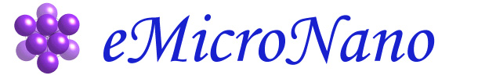

|
Home page of Dr.
Mohamed
Gad-el-Hak
Department of Mechanical &
Nuclear Engineering
Virginia
Commonwealth
University
Thinking is one of the
greatest
joys of humankind. (Bertolt Brecht in his play Galileo)
I have no special talents. I am only passionately
curious. (Albert
Einstein, 1879-1955)
|
For the
curious, this is how the subject
looks like on a good day. |
Read how I celebrate
yearly the
28th of August, declared by the Governor of
Illinois in the year 2000
to be Theoretical and Applied Mechanics Day. Click
here.
Link to Gad-el-Hak's
pages on: Wikipedia;
Google
Scholar; GS
Citations; and Google
Search.
Web Portal for
Fluid
Mechanics:
Web Portal for
Micro- and
Nanotechnology: 
|